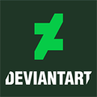

Katrine Hagmann - web developer and artist
About me
Woman born 1988 in Norway. I began to draw seriously in 2004, when I started into secondary school. I also sometimes accepts special art commissions.
My favorite topics in art are realism, surrealism and styled art. I loves to draw most things, and loves to experiment with different materials, styles and try out new techniques.
I produces everything from abstract paintings to digital fantasy drawings. Currently learing to code to become a web developer, another exciting medium to master.
Links to my socialmedia

Education
2009 - 2011 Norges kreative fagskole i Oslo
Grafisk design
2 years of education
combination of theory and practice
2007 - 2009 Norges kreative fagskole i Oslo
illustration
2 years of education
combination of theory and practice
2004 - 2007 Kirkeparken VGS. Moss High school
Grafisk design
2 years of education
combination of theory and practice
Work experience
Mar. 2022 - Maskineriet AS avdeling Allente - Partner support
Help installers in the field with registering equipment, technical support, solving system-based problems
Solve written inquiries involving logistics orders, returns, correction of commission and general questions
Handle complaint cases according to Norwegian law and the guidelines stated by Allente
Escalate technical issues with documentation
Punching cases to sort orders to the corret serviceman/finalize orders and new contracts sold by dealers, among other things
Mar. 2020 - mars. 2022 Maskineriet AS avdeling Allente - Customer service
Technical support, process subscriptions, invoices and sales
Worked approx. 9 months on chat exclusively where we helped at least 3 customers at the same time
jul. 2014 - mars 2020 Teleperformance Nordic Moss - Customer service
Sales and customer service for one of the company's largest customers in Norway
Experience from technical support for ICE.net, Canal Digital and Get
Resolved inquiries in all contact channels
Actively promoted and sold the client's product portfolio
Software/hardware I can master
Photoshop
Code Editing program - VSC
Office360
ChatGPT
Midjourney
Andoid and iOS devices
Windows and Mac
Skills
Customerservice minded
Positive attitude and friendly
Orginized
Efficient and ready for a challange
Resourceful
Online programming courses I've attended so far
The Complete 2023 Web Development Bootcamp- 64 hours course (in progress)
Coding for Visual Learners: Learning JavaScript from Scratch - 4
hours
HTML Basics - 3 hours
You can view my mini gallery here
Contact
E-mail: katrinehagmann@gmail.com
© 2023 Katrine Hagmann. All rights reserved.